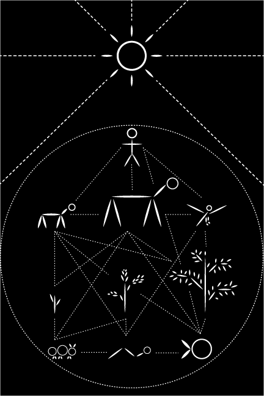

Project 1 : : Visual Message for Inhabitants of Other Celestial Bodies
Project 1: Digital Illustration, black & white
For this project, I wanted to communicate humans’ interdependence on many other species of both plants and animals. To show this, I decided to create a webbed system to show the many relationships between species and also our ultimate dependence on our sun and placement in our solar system.
This project was created entirely in Adobe Illustrator using the pen and line tool to create a sleek geometric look. I kept the color palette limited to black and white to keep the focus on the simple shapes and line work.